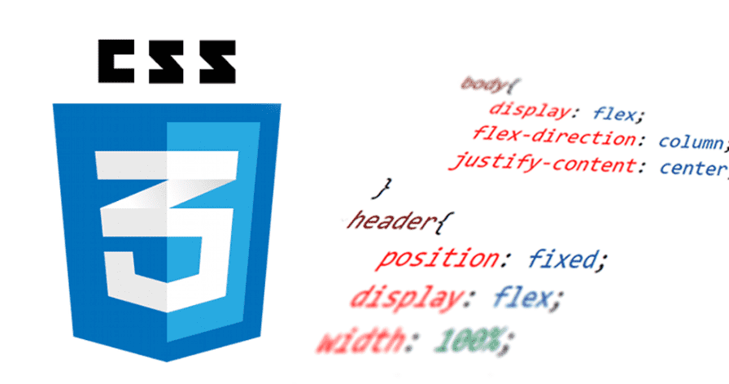

Sintaxis y Selectores CSS.
Interacción humano Ordenador

Popósito del sitio
Esta página web tiene como objetivo ofrecer información sobre el uso de la isntaxis y selectores CSS, así como sobre la interacción human oordenador. En ella se explica brevemente la sintaxis y selectores CSS.